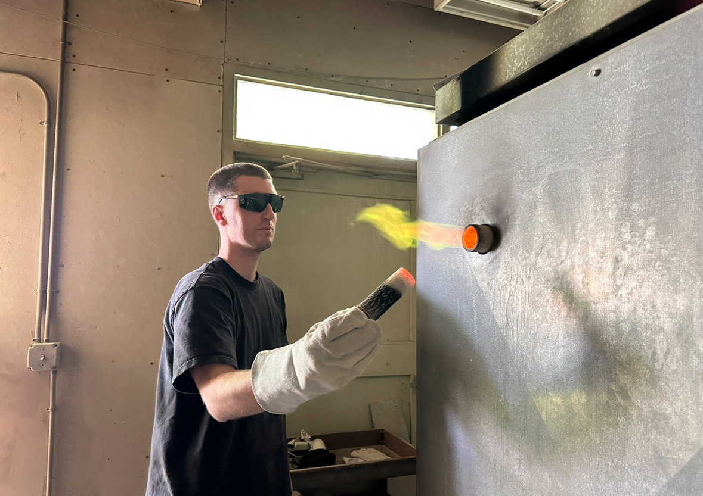

I consider my art practice as focusing on utilitarian pottery, and I enjoy creating functional pieces that can be used in everyday life. My art process involves firing my work in atmospheric kilns to create unique and unpredictable surfaces.
Go Home